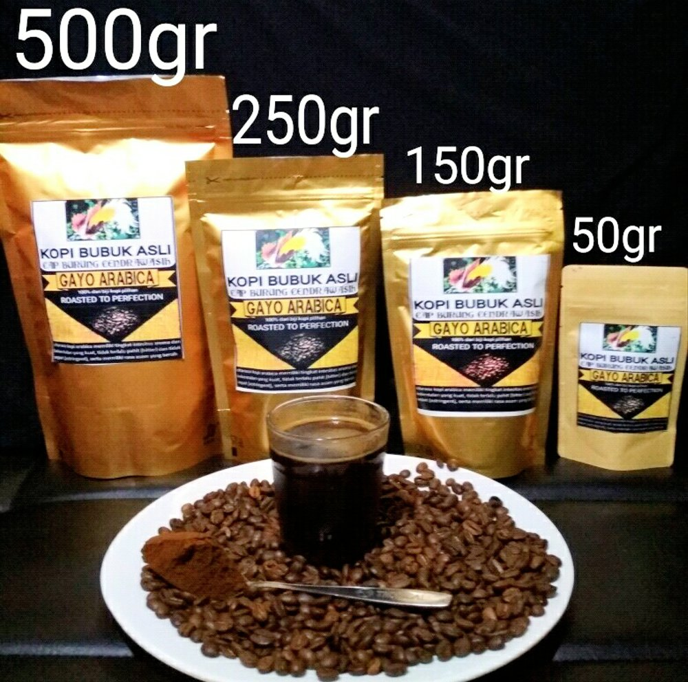

Posting Teratas
Kopi Arabika
Lebih Dekat Dengan Kopi Arabika
Kopi Arabica merupakan jenis kopi tradisional dengan cita rasa terbaik. Tidak heran jika tanaman yang biasa tumbuh di daerah sejuk dan dingin ini menguasai pasar dunia yakni 70 % dari jumlahnya yang beredar di pasaran. Sebagian besar kopi yang ada dibuat dengan menggunakan biji jenis ini. Arabica sendiri berasal dari Eutopia dan sekarang sudah di budidayakan di berbagai penjuru dunia.
Arabika memiliki ciri ciri biji kopi yang lebih kecil dibandingkan dengan jenis lainnya. Selain itu jenis Arabika memiliki rasa dan aroma yang lebih nikmat, serta kandungan kafeinnya lebih rendah sehingga baik untuk dikonsumsi. Karena banyak memiliki keunggulan harganya pun lebih mahal dibandingkan jenis lainnya.
Kopi arabika tumbuh pada ketinggian 600 sampai 2000 meter diatas permukaan laut. Tanaman ini dapat tumbuh hingga mencapai ketinggian 3 meter bila kondisi lingkungannya baik, dimana suhu optimalnya sekitar 18 sampai 26 derajat celcius. Biji yang dihasilkan berukuran cukup kecil dan berwarna merah gelap.
......